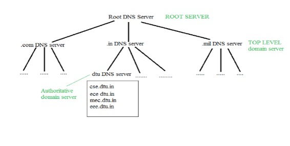
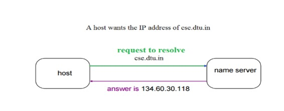
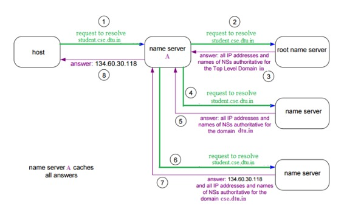

DNS is a host name to IP address translation service. DNS is a distributed database implemented in a hierarchy of name servers. It is an application layer protocol for message exchange between clients and servers.
Requirement
Every host is identified by the IP address but remembering numbers is very difficult for the people and also the IP addresses are not static therefore a mapping is required to change the domain name to IP address. So DNS is used to convert the domain name of the websites to their numerical IP address.
Domain :
There are various kinds of DOMAIN :
- Generic domain : .com(commercial) .edu(educational) .mil(military) .org(non profit organization) .net(similar to commercial) all these are generic domain.
- Country domain .in (india) .us .uk
- Inverse domain if we want to know what is the domain name of the website. Ip to domain name mapping.So DNS can provide both the mapping for example to find the ip addresses of geeksforgeeks.org then we have to type nslookup www.geeksforgeeks.org.
Organization of Domain

It is Very difficult to find out the ip address associated to a website because there are millions of websites and with all those websites we should be able to generate the ip address immediately,
there should not be a lot of delay for that to happen organization of database is very important.
DSN record – Domain name, ip address what is the validity?? what is the time to live ?? and all the information related to that domain name. These records are stored in tree like structure.
{kind=link}
Namespace – Set of possible names, flat or hierarchical . Naming system maintains a collection of bindings of names to values – given a name, a resolution mechanism returns the corresponding value –
Name server – It is an implementation of the resolution mechanism.. DNS (Domain Name System) = Name service in Internet – Zone is an administrative unit, domain is a subtree.
Name to Address Resolution

The host request the DNS name server to resolve the domain name. And the name server returns the IP address corresponding to that domain name to the host so that the host can future connect to that IP address.
Hierarchy of Name Servers
Root name servers – It is contacted by name servers that can not resolve the name. It contacts authoritative name server if name mapping is not known. It then gets the mapping and return the IP address to the host.
{kind=link}
Top level server – It is responsible for com, org, edu etc and all top level country domains like uk, fr, ca, in etc. They have info about authoritative domain servers and know names and IP addresses of each authoritative name server for the second level domains.
Authoritative name servers This is organization’s DNS server, providing authoritative hostName to IP mapping for organization servers. It can be maintained by organization or service provider. In order to reach cse.dtu.in we have to ask the root DNS server, then it will point out to the top level domain server and then to authoritative domain name server which actually contains the IP address. So the authoritative domain server will return the associative ip address.
Domain Name Server

The client machine sends a request to the local name server, which , if root does not find the address in its database, sends a request to the root name server , which in turn, will route the query to an intermediate or authoritative name server. The root name server can also contain some hostName to IP address mappings . The intermediate name server always knows who the authoritative name server is. So finally the IP address is returned to the local name server which in turn returns the IP address to the host.
{kind=link}